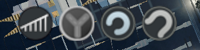

都市天际线·模组清单及介绍¶
开始之前¶
开始之前，应当谨记如下注意事项：
-
不要使用“退回到主菜单”功能返回主界面重新加载存档，会导致模组二次加载从而造成冲突。
As a general rule, ALWAYS quit to the desktop between loads and NEVER to the main menu! This is a Unity game, which means you can’t do a second load if you mod the game.
A second-load is loading another map/save when one has been already been loaded before in the current session, including after quitting to the main menu. The game loads mods in two halves, one part on the Paradox logo, and one part during the loading screen. By loading a second time, the game forces mods to load themselves twice, which causes problems.
-- By LemonsterOG
-
在订阅模组之前，应当仔细检查模组的相关说明和评论区，避免因模组冲突导致包括但不限于存档破坏、游戏卡顿、未响应甚至崩溃的各种异常。
- 在取消模组订阅之前，应先查阅模组的说明，判断模组是否对存档造成了影响，取消模组订阅是否会导致存档破坏。部分模组提供了恢复模式用来将存档恢复到订阅前的状态，请按照模组说明执行。不要在游戏运行中取消任何资产或模组的订阅。
-
如果在模组使用中出现异常，需要向开发者进行反馈，请务必尽可能提供充足的信息，让开发者能够快速、准确地定位问题。这些内容包括但不限于：
- Mod Compatibility Checker模组产生的兼容性检查报告
- 导致游戏错误的上一步行为（你做了什么导致游戏出问题）
- 游戏内的错误提示或异常行为（游戏出了什么问题）
- 游戏对话框中的错误信息（如果有）
- 游戏的调试信息显示（游戏内快捷键为F7，如果游戏仍然运行并且可以操作）
- 游戏崩溃产生的内存记录与日志文件，对于Windows系统，该文件位于
C:\Program Files (x86)\Steam\steamapps\common\Cities_Skylines文件夹下以“日期_时间”格式命名的文件夹中（如果游戏崩溃）。 - 游戏产生的其他日志文件，这些文件可能位于
C:\Program Files (x86)\Steam\steamapps\common\Cities_Skylines\Cities_Data文件夹下。
有关获取这些信息的更多途径，请参见Paradox Forum。
-
不要人身攻击开发者。开发者没有义务长期维持一个模组的更新，并且有权利随时放弃对模组的更新。
Please be reminded that mods are created by people in their free time, simply because they love the game or enjoy programming. They don't get paid for this, except for any donations they may get from gamers. Please don't demand updates or changes to mods or assets, because none of these creators have to do anything, including making mods/assets at all. We're lucky to even have the option to use these creations.
-- By LemonsterOG
-
本指南中所使用的图标含义如下：
- ：使用这些模组可能导致轻微的兼容性问题
- ：使用这些模组可能导致较为严重的兼容性问题（如偶尔停止响应、崩溃等），应尽量避免同时使用这些模组
- ：使用这些模组可能导致严重的兼容性问题，不要同时使用这些模组
- ：表示有待证实的内容
关于模组兼容性和游戏崩溃的更多内容，请参见：
- Help Us Help You
- Mod Compatibility Checker
- Loading Screen Mod
- CSL Crash Mod Debugging
- Windows Troubleshooting Guide - Cities Skylines
- Mac Troubleshooting Guide - Cities Skylines
- Linux Troubleshooting Guide - Cities Skylines
- Cities Skylines Troubleshooting FAQ
- Log files (output_log.txt or Player.log)
- Finding Broken & Bloated Workshop Subscriptions
道路交通模组¶
- Advanced Road Tools
- Advanced Vehicle Options (Sunset Harbor)
- CSUR Loader
- CSUR ToolBox
- Elektrix's Road Tools 2.93
- Fine Road Anarchy 2.0.2
- Fine Road Tool 2.0.4
- Heavy Outside Traffic
- More Vehicles
- Network Extensions 2 (Updated for Sunset Harbor)
- Network Multitool 1.2
- Node Controller Renewal 3.1.3
- Quay Anarchy
- Roundabout Builder
- Smart Intersection Builder
- TM:PE V11 STABLE (Traffic Manager: President Edition)
AdvancedRoadTools¶
| 工坊链接 | 1925527132 |
| 依赖项 | 无 |
| 游戏内图标 |  |
| 不兼容模组 | 暂无 |
| 源代码 |
帮助修建转大圈（90度）的左转匝道与转小圈（270度）的左转匝道。有关该模组的详细教程，请参见B站视频教程
Advanced Vehicle Options (Sunset Harbor)¶
| 工坊链接 | 1548831935 |
| 依赖项 | 无 |
| 游戏内图标 | |
| 不兼容模组 | 暂无 |
| 源代码 |
允许自定义车辆的信息，包括但不限于：
- 启用或禁用车辆
- 车辆颜色
- 车辆速度（和加速度）
- （公共交通）车辆容量
- （火车）将最后一列改为车尾
Advanced Vehicle Options（AVO）与Improved Public Transport 2（IPT2）都能修改公共交通数据，在AVO内修改的数据会在IPT2反映出来，不会造成冲突，反之亦然。但AVO无法启用或禁用已经规划线路后的公共交通车辆的生成，需要使用IPT2、Transport Lines Manager 14或游戏内置的公共交通线路（点击“Manage Spawning in Transport Line Overview”按钮）进行调整。
When setting train routes in Transport Lines Manager 14, assets with AVO "allow this vehicle to spawn" disabled cannot be selected
-- By kenty
货运车辆的容量单位有两种，即卡车数量与车辆携带的资源量。货运飞机、货轮、货运列车的容量以卡车数量为单位，货运卡车的容量以资源量为单位。默认情况下：
- 货运卡车的容量为8000单位，等价于8吨；
- 货运列车的容量为15辆卡车的容量，等价于120吨；货轮的容量为25辆卡车的容量，等价于200吨；货运飞机的容量为20辆卡车的容量，等价于160吨。
@nhatanh0475 - there is coexistence of ITP2 and AVO. You can change all settings for vehicles in AVO and they are reflected in ITP2 and vice versa. The red colored figures are only a reminder, that whatever you change will reflect in the other mod. There have been users getting confused, eg. on the speed for a specific vehicle, as AVO takes a different factor for the conversion. So if you don't really like IPT2 for configuration, use AVO and it should be all fine.
-- By Tim
请注意，关闭某一种服务的所有车辆会对整个城市产生明显影响。如关闭所有的消防车后，所有的消防站都无法派出车辆扑灭城市中的火灾。
Advanced Vehicle Options默认不支持修改城市服务车辆的容量（服务量），因为修改这些数据可能破坏游戏平衡性，扰乱经济系统。如果确实需要修改相关数据，可以在“选项”/“Advanced Vehicle Options”下找到“Enable various values for non-cargo and non-passenger vehicles”并启用。 该模组不会影响游戏存档。禁用或取消订阅不会破坏存档。
CSUR Loader¶
| 工坊链接 | 1959183067 |
| 依赖项 | Ability to Read |
| 游戏内图标 | 无 |
| 不兼容模组 | 暂无 |
| 源代码 |
CSUR Loader 模组是所有CSUR道路资产的依赖项。CSUR道路本身并不包含材质，材质由CSUR Loader在游戏内进行渲染。使用CSUR道路系统必须订阅此模组。
[SUNSET HARBOR UPDATE] All assets and mods for CSUR are compatible with Sunset Harbor DLC and its free updates. Core utility mod for the all-new CSUR road system. This mod is required for any new CSUR road pack on the Workshop:
You can distinguish the new CSUR from its predecessors (original CSUR, CSUE) by the “CSUR” logotype and the highway logo similar to the thumbnail of this mod.
The CSUR Loader provides the following key contents for the CSUR road system:
- Base textures for CSUR roads: the roads themselves do not contain textures, and CSUR Loader applies a set of “external” textures to CSUR roads after the game is loaded.
- Sidewalks: CSUR Loader provides dedicated sidewalks designed for CSUR roads.
- Road props: CSUR Loader provides road props used by CSUR roads, including lights for the elevated mode, custom traffic lights and traffic cameras.
-- By VictoriaCity
CSUR ToolBox¶
| 工坊链接 | 1959342332 |
| 依赖项 | Harmony 2.0.4-4 (Mod Dependency) |
| 游戏内图标 | |
| 不兼容模组 | Network Extensions 2 (Updated for Sunset Harbor) |
| 源代码 |
提供了用于查找CSUR道路的操作面板。可以在选项菜单中调节车道过渡平滑功能、关闭除基本模块外划分分区、TMPE划线功能。
- Provide a UI panel which makes it easy to find CSUR roads
- Make it much easier to select roads with offsets on the map by clicking on road models instead of clicking on their center lines.
- Pillars will be adjusted to the offsets when you are building elevated CSUR roads with offsets.
- Smooth lane shifts
- Disable CSUR Shift Ramp Transition and Express Road Zone
- Call TMPE stayinlane laneconnector for complex CSUR node
-- By pcfantasy
请注意，使用第 6 条功能需要安装TM:PE V11 STABLE，安装其他版本无效。
关于CSUR Toolbox的详细功能说明，请参见中文说明书。
Elektrix's Road Tools 2.93¶
| 工坊链接 | 1645781000 |
| 依赖项 | Ability to Read |
| 游戏内图标 | |
| 不兼容模组 | 暂无 |
| 源代码 | 暂无 |
别名“特朗普头”。
提供了调整已放置道路的一些功能，包括添加或删除道路节点、创建交叉路口、水平翻转道路材质和平滑道路坡度。点击图标可以打开一个窗口，里面包含了所有可用的工具。
- 添加道路节点：将光标放在一段路段上点击即可
- 删除道路节点：将光标放在需要删除的节点上点击即可。在删除节点后道路的方向、形状可能发生变化，高架桥道路可能会变为地面模式，需要用Move It等模组进行微调
- 创建交叉路口：这个工具用来将相交但不相连的两个路段相连（即创建十字路口），先后选取两个路段后按回车即可
- 水平翻转道路材质：点击需要翻转材质的路段即可（待验证：我也不知道这个功能具体有什么用，可能和不对称道路有关）
- 道路平滑工具：点击需要平滑高度的所有节点，按回车即可，按Shift+C可以取消选择。选择的节点必须是连续的，即任意两个选取的节点间不能有没有选择的节点。
Fine Road Anarchy 2.0.2¶
| 工坊链接 | 1844440354 |
| 依赖项 | 无 |
| 游戏内图标 | （需要安装Fine Road Tool 2.0.4） |
| 不兼容模组 | 暂无 |
| 源代码 |
在修建道路时消除道路和节点的各种碰撞冲突：
- 路段冲突 Ctrl+A ：允许修建相互穿过的两条路段
- 道路自动弯曲 Ctrl+B ：消除修建部分短小道路时的自动弯曲
- 节点吸附 Ctrl+S ：避免两个相距很近的道路节点合并成一个
- 建筑冲突 Ctrl+C ：避免高架桥等影响地面建筑
该模组和 Fine Road Tool 2.0.4 模组是修建大多数立交桥所需要的关键模组。
请注意，在修建交叉路口时必须保证“路段冲突”、“节点吸附”为关闭状态，否则会影响两个方向上道路的连接。
Fine Road Tool 2.0.4¶
| 工坊链接 | 1844442251 |
| 依赖项 | 无 |
| 游戏内图标 | |
| 不兼容模组 | 暂无 |
| 源代码 |
Fine Road Tool 提供了放置道路时的一些精细调整功能：
- 调整放置的道路类型：自动、地面模式、高架模式、桥模式、隧道模式
- 如果使用地面模式或隧道模式且道路高度高于地面，地形会被提升至道路高度。拆除道路后地形恢复
- 使用 Ctrl+Left / Right 在不同道路模式之间切换
- 高度步长设置 Ctrl+Up / Down ：更精细地调整道路高度的步长范围（1~12米）
- 使用 Home 重置道路高度
- Straight Slope Shift+S ：设置道路不受地形高度的影响，实现道路平滑
Heavy Outside Traffic¶
| 工坊链接 | 1596838226 |
| 依赖项 | 无 |
| 游戏内图标 | 无 |
| 不兼容模组 | AdvancedOutsideConnection Optimised Outside Connections |
| 源代码 |
提高过境车流量。可以分别调节四个方向上的道路车流量，车流量共有三个档位可以调节。另外，地图边缘对外连接的宽度也会影响车流量，道路越宽车流量越高。
如果和 Optimised Outside Connections 模组一同使用，切记不要在 Optimised Outside Connections 的选项中禁用过境车流
More Vehicles¶
| 工坊链接 | 1764208250 |
| 依赖项 | 无 |
| 游戏内图标 | 无 |
| 不兼容模组 | 暂无 |
| 源代码 |
提高游戏中允许的车辆上限。原版游戏允许的活动车辆上限为16383，停靠车辆上限为32767， More Vehicles 将两个上限提高到65535。
该模组会影响存档，关闭或取消模组订阅会导致相关存档无法加载。
Network Extensions 2 (Updated for Sunset Harbor)¶
| 工坊链接 | 812125426 |
| 依赖项 | 无 |
| 游戏内图标 | 无 |
| 不兼容模组 | CSUR ToolBox |
| 源代码 |
在原版道路的基础上提供了一系列新的道路，使得道路划分更加灵活
- 可分区道路
- 宽度8m的单行道、带自行车道与停车位的变种
- 宽度8m的单向公交专用道
- 宽度8m的一系列双向小型道路，包含多种道路材质
- 宽度8m的小型双向两车道道路，没有停车位
- 宽度16m的有中央分隔带（绿化、行道树及实线）的双向两车道道路
- 宽度16m的单双向公交车专用道
- 宽度16m的单双向四车道道路、3+1不对称四车道道路
- 宽度16m的单向三车道道路与2+1不对称三车道道路
- 宽度32m的双向两车道道路
- 宽度32m的带左转专用道的双向四（五？）车道道路
- 宽度32m的3+2不对称五车道道路
- 宽度32m的带中央分隔带的六车道道路
- 宽度32m的4+2不对称六车道道路
- 宽度32m的带公交车专用道的双向六车道道路
- 宽度32m的双向八车道道路
- 带中央分隔带的双向六车道道路
- 高速公路
- 单双向两车道高速公路
- 2+1不对称三车道高速公路
- 单双向四车道高速公路
- 单向五车道高速公路
- 单向六车道高速公路
Network Extensions 2 Roads Replacement Complete List 中提供了部分 NExT 2 道路的备选资产。
Network Multitool 1.2¶
| 工坊链接 | 2560782729 |
| 依赖项 | Harmony 2.0.4-4 (Mod Dependency) |
| 游戏内图标 | |
| 不兼容模组 | 暂无 |
| 源代码 |
Cities: Skylines 游戏中功能最丰富的道路模组。包含了 AdvancedRoadTools 、 Elektrix's Road Tools 2.93 、 Parallel Road Tool 等模组的几乎全部功能。
- 添加删除节点
- 合并分离节点
- 道路坡度平滑
- 道路曲线平滑
- 创建单环道路
- 创建多环道路
- 创建平行道路
- 创建环岛道路
- 创建贝塞尔曲线
- 道路解锁与绑定
可以使用 Ctrl+T 启动该模组，或者使用 Unified UI 模组。
Node Controller Renewal 3.1.3¶
| 工坊链接 | 2472062376 |
| 依赖项 | Harmony 2.0.4-4 (Mod Dependency) |
| 游戏内图标 | |
| 不兼容模组 | 暂无 |
| 源代码 |
Node Controller Renewal 提供了控制道路节点的功能，可以用于控制交叉路口节点的坡度、各个路段的旋转角度和缩进距离。
可以使用 Ctrl+N 启动该模组，或者使用 Unified UI 模组。
Quay Anarchy¶
| 工坊链接 | 650436109 |
| 依赖项 | 无 |
| 游戏内图标 | 无 |
| 不兼容模组 | 暂无 |
| 源代码 |
订阅并启用后即可自由地建设护岸，而不受地形的影响。
Roundabout Builder¶
| 工坊链接 | 1625704117 |
| 依赖项 | 无 |
| 游戏内图标 | |
| 不兼容模组 | 暂无 |
| 源代码 |
该模组用于修建环岛，也可以将十字路口节点转变为环岛。
使用 Ctrl+O 启动该模组
公共交通模组¶
- Advanced Stop Selection (ex MTSE)
- Airplane Line Tool 1.2
- Airport Roads
- AutoLineColor Redux
- Improved Public Transport 2
- More Network Stuff
- Optimised Outside Connections
- Other Rail Track Speed Increaser
- Railway Replacer
- Ship Line Tool 1.1
- SingleTrainTrackAI
- Stops & Stations
- Transfer Info (beta)
美化模组¶
- Additive Shader
- Building Themes
- Clouds & Fog Toggler
- Extra Landscaping Tools
- Intersection Marking Tool 1.8.2
- Lights On
- Moon Phases
- Network Skins (Sunset Harbor compatible)
- No Radioactive Desert And More!
- Relight
- Repaint 1.3
- Road Options (Road Colors Changer ++)
- Shadow Strength Adjuster
- Theme Mixer 2
- Ultimate Eyecandy v1.5.2
- Vehicle Effects 1.9.1
资产控制模组¶
- Building Themes
- Prop & Tree Anarchy
- Prop Line Tool [PLT] (vAlpha)
- Prop Painter 4.0 + PaintUI
- Prop Precision
- Prop Snapping
- PropRotating Params
- Random Tree Brush
- Random Tree Rotation
- Repaint 1.3
资产管理模组¶
- AssetsLists - Tired of browsing through all parks and props ? [Snowfall ✓]
- Better Road Toolbar
- Find It! 2
- More Advanced Toolbar
- Picker
真实化模组¶
- Difficulty Tuning
- Lifecycle Rebalance Revisited 1.5.4
- More Diverse Crowd (a.k.a. Servicemen on Streets)
- Real Time
- Realistic Population Revisited 1.4.3
- Vehicle Wealthizer 3
信息显示模组¶
- Building Vehicle Monitor
- CSL Show More Limits
- City Web Server
- Extended Building Info
- Measure It!
- Precision Engineering
公共服务模组¶
分区建筑模组¶
工业相关模组¶
地形模组¶
资产模组¶
调试模组¶
依赖项模组¶
- Additive Shader
- Custom Animation Loader (CAL)
- Custom Effect Loader
- Extra Vehicle Effects (Plugin for Vehicle Effects Mod)
- Extra Train Station Tracks ( ETST )
- Harmony 2.0.4-4 (Mod Dependency)
- Network Tiling
- Panel Hook (beta) for modders
- Patch Loader Mod
- Prefab Hook (Mod Dependency)
其他辅助模组¶
- CSL Map View
- Cinematic Camera Extended
- FPS Booster
- First Person Camera: Updated
- Move It
- Spawn Points Fix
- Touch This! Tool 4
- Transparency LODs Fix
- UI Resolution 1.1.2
- Ultimate Level Of Detail (ULOD)
- UnifiedUI (UUI) 2.0
创建日期: 2021-09-04